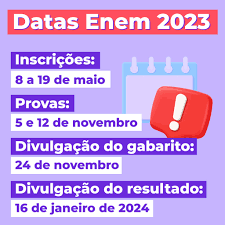
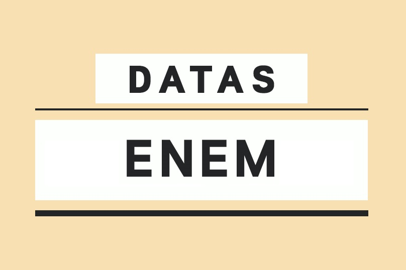

O calendario disponibilizado conta apenas com a data para a abertura das inscrições, fechamneto das inscrições e datas aproximadas previstas para a aplicação, além disso, conta também com a data para a inscrição da nota para o SiSu.
Todo estudante de ensino médio tem um em comum, um objetivo final para enfrentar ao final de sua graduação na escola: O ENEM. O ano mal começou e muitos ja estão se programando para o grande dia, que normalmente, ocorre no ultimo bimestre do ano, mas, de qualquer forma, todos que vão passra pelo exame, acabam se preparando durante todo o ensimo médio, ou até mesmo, desde o ultimo ano do fundamental.
De qualquer forma, a prova é tão complexa e densa que o trabalho não é apenas para os estudantes, todos os profissionais da educação que estão envolvidos no projeto da aplicação da prova, trabalham arduamente durante um ano inteiro, para a criação de todo o processo do vestibular. Sendo assim, o calendário do exame nacional do ensimo médio é definido antecipadamente, com base em todo o desenrolar do processo de criação, verificação, validação, correção, impressão e distribuição da prova. Nós tambem não podemos nos esquecer que a prova tem um peso muito grande em todo o curriculo academico de um sujeito, sendo assim, todo o processo de criação, ocorre em total sigilo, por baixo dos panos. Por isso, eles procuram agilizar tudo o possivel, progamando-se com muita atencedencia e atenção.
Conforme tudo isso, a IBEMEP é encarregada do desenvolvimento e planejemento da prova, e o MED o responsavel pela verificação, validação e distribuição dos cadernos do exame, já que o respectivo vestibular, tem vinclulos diretos com os fundos publicos da educação, sendo possivel usar a prova como intrumento para ingressar em todas as universidades do Brasil, sendo dependente da nota adquirida no exame. Planehar a carreira universitaria com base no ENEM, pode ser bem vantajoso, basta se programar e se dedicar para alcançar as médias de corte necessarias. Se você também está se planejando para o ENEM desse ano, segure as pontas e a ansiedade, antes de tudo, confira o calendário oficial do MEC abaixo:
